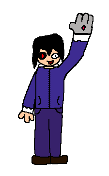

From: Parasites | Age: 18 | Height: 5'7" (170 cm) | he/him

Atrix is a reckless little fella that constantly gets himself into lots of trouble
He's really stubborn and REFUSES to give up even though giving up is the right option that wont let him 6FT UNDERGROUND
His sister Xitra has to take care of him and prevent him from meeting his demise
His robotic stuff is powered by the RedStar. a powerful red gem full of power.
He uses a small portion of the gem to not overcharge his arm. as the gem can be really REALLY powerful at high ammounts